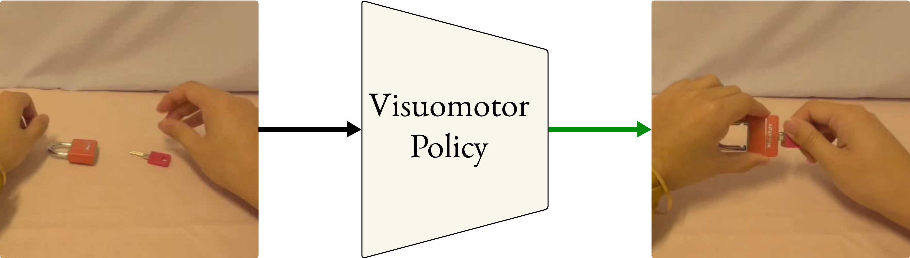
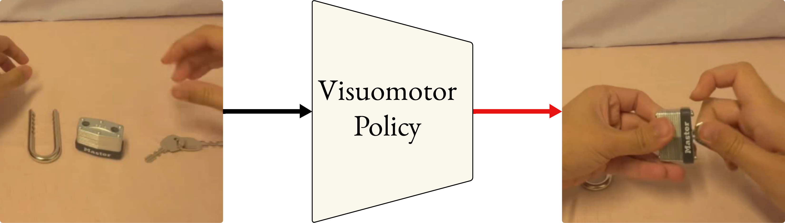
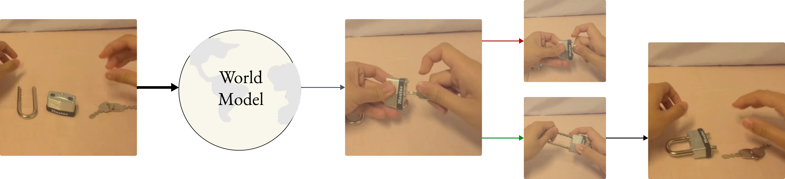

"I see lock and key. Place key inside lock and turn key"

"I see lock and key. Place key inside lock and turn key"

Predicts multiple future states and which arrives to the end goal state
Quick decision making and inference for future state
Eg. translation of human movement to robotic
More like an imagination or simulation engine that has learnt the physics and properties.